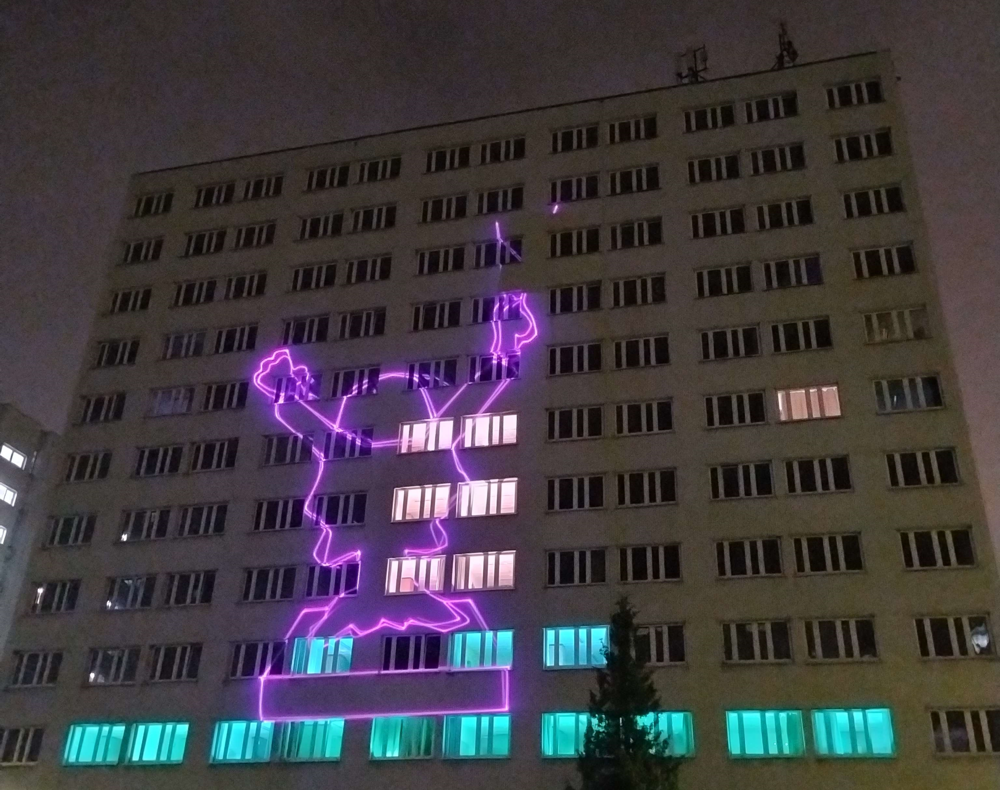
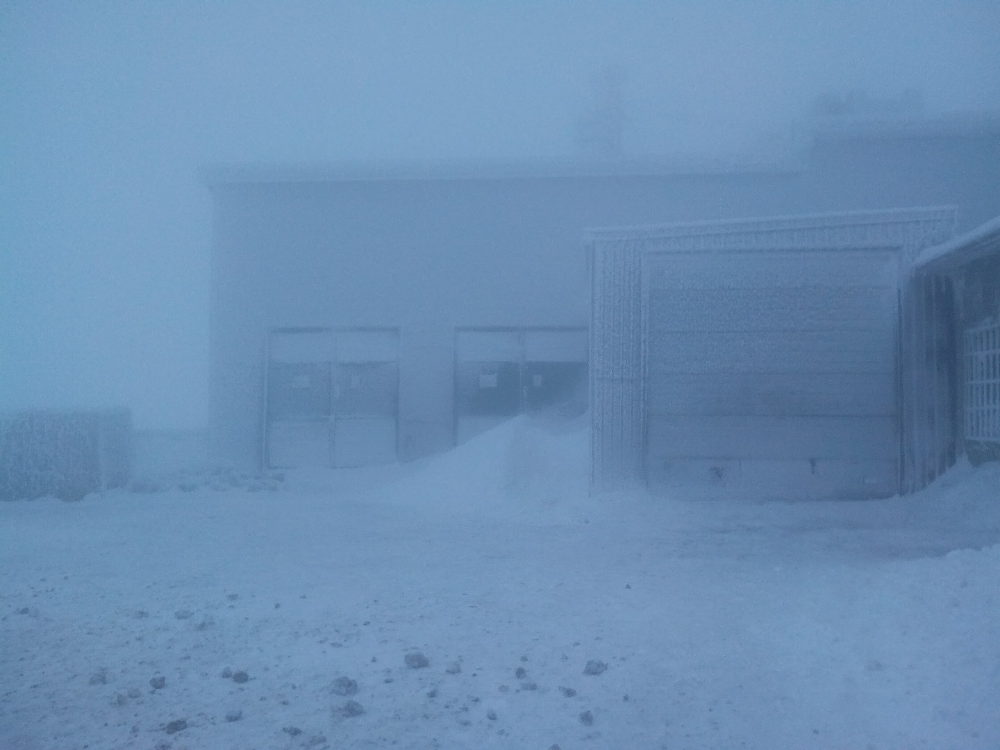

O mnie
Studiuję na Politechnice Wrocławskiej, interesuję się techniczną stroną IT (PC builder), lubię też postprodukcję video.
Sporadycznie gram w szachy, a czasem obejrzę jakiś film.
Coś bym więcej napisał ale czat mi się zkończył
I use Linux btw A tak na serio to Minta zacząłem używać ;)
Osiągnięcia/
- Wolontariusz Juwelaliów PWR 2025
- Dni Kultury - P.I.W.O. 2025
- Kostka Rubika 3x3 <1min
- 1299 elo w szachach szybkich na chesscom
Projekty
no narazie tak średnio bym powiedział
Galeria

Protected hedgehog
26 czerwiec 2025

Juwenalia PWR
19 maja 2025

P.I.W.O.
15 maja 2025

Rajd
27 kwietnia 2025

Wiedźmin 3
12 czerwiec 2021

Beczka
29 czerwiec 2021

Szrenica
16 grudzień 2017
Kontakt
Możesz się ze mną skontaktować przez email: nie możesz